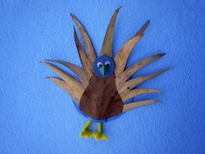

 |

A Peafowl with eucalypto leafs.

 |
A Peafowl with eucalypto leafs.

Because of the success with our first castle (post: juego sopla nubes) we did another one even bigger.
Read more →
With an apple and finger paint you have a beautiful wrapping paper.
Read more →
These are stones painted with finger paint. The zickzack out of felt.
Read more →

You need some tubes of toilet paper. Push on one side the two edges until they meet in the middle. That is already the form of…
Read more →
Food for the birds. A little change of the tetrapak and you can help the birds at wintertime.
Read more →